id="js_content" style="">
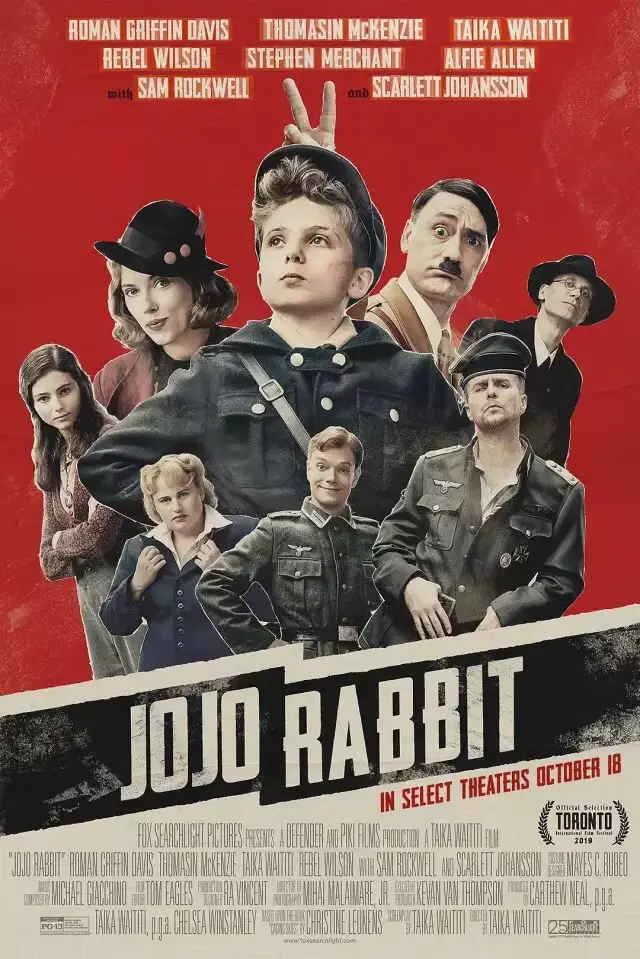
作者：李大虾 二斤
今年，《乔乔的异想世界》获奥斯卡最佳改编剧本奖。
再一次，这部优秀的电影将我们的目光转向可怕的纳粹。
十岁的乔乔是希特勒的铁粉，他最大的梦想就是成为一个勇敢的纳粹，然后奔赴战场，杀死那些肮脏、愚蠢、脑袋上还长着角的犹太人。
所以，他一身纳粹装扮，自己的房间里都是纳粹的宣传海报。
尤其是希特勒的海报，因为希特勒不仅是乔乔最崇拜的偶像，在他的心里，希特勒是自己一生中最好的朋友，没有一个人可以取代。
在乔乔的口中，满是对犹太人的仇恨、杀戮以及作为日耳曼人的优越感，即使他自己连鞋带也不会系。
△真实中的希特勒青年团，这个组织是由10-14岁的孩子组成，是纳粹帝国培养人才的摇篮，也是一支准军事组织。
而这些本不该属于孩子的东西，让乔乔心里难以承受。
所以，当他心里有疑惑时，他就大声呐喊来让自己更加勇敢。
尤其当看到那么多同龄的孩子也在勇敢呐喊时，他就会变得更加疯狂，用他这个年纪所知道的最恶毒的话语来咒骂犹太人，去烧毁他们的书。
而让乔乔最受安慰的是，他臆想出来的希特勒会无时无刻地陪伴着他。
在希特勒的鼓励下，乔乔变得越来越像一个合格的纳粹......
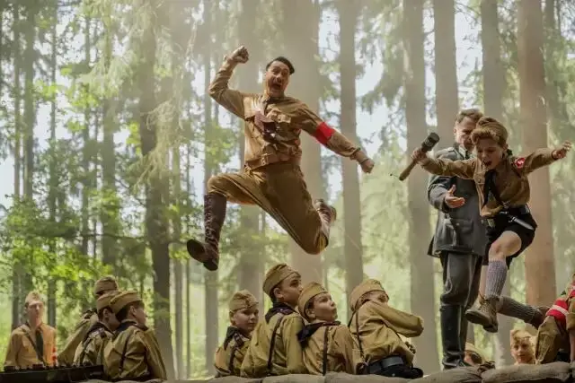
要彻底给孩子们洗脑袋，没有两把刷子是不行的。
这部电影很有意思，他将复杂抽象的纳粹主义具像化，变成一个人来现身说法，这样，就算是孩子，都能看懂纳粹主义的真面目。
电影刚开始，希特勒的出现是一个正面形象，是可爱的玩伴，是带乔乔走出困境的导师。
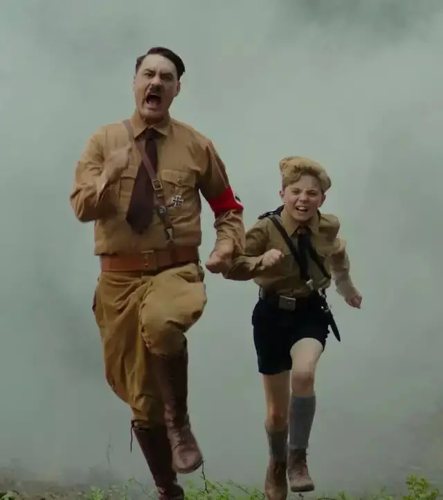
希特勒不断鼓励乔乔，要努力让自己思想敏锐如蛇，身体结实如狼，勇气无畏如豹，做一个真真正正的男子汉。
这些都是很好的东西，但是有两点让纳粹成为了纳粹。
首先希特勒只强调勇气，反对怜悯。
甚至，希特勒将欧洲传统基督教伦理反其道而行，认为“怜悯是一种原罪，怜悯弱者是违背自然的事。”
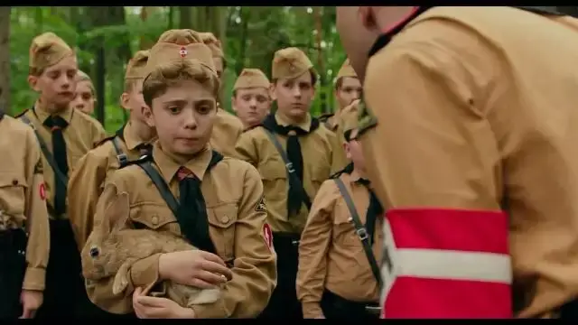
所以，青年营里，教官将一只兔子抓在手上，让乔乔把它的脖子扭断。
这本是一件很残忍的事情，但是纳粹却以勇气为借口来泯灭孩子的人性。
这样的洗脑教育，在不停地告诉孩子，弱者根本不配拥有生存的权力。
接着，第二点就是仇恨教育。
纳粹不停地向孩子们灌输犹太人有多诡诈，说犹太人是较低的生命物种，是一种寄生虫，能将致命的疾病传染给德国民族。
纳粹就像伊安・克尔肖所概括的“恐惧、愤恨和偏见的融合物，加倍了对更好未来的模糊憧憬”。
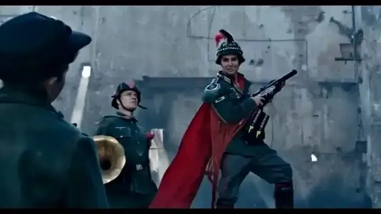
所以，最可怕的不是丑陋的面孔，而是丑陋面孔外面戴了一个美丽的面具。
孩子们把杀犹太人当成了勇敢，把对弱者的怜悯当成了懦弱，把对希特勒的崇拜当成了忠诚，把烧书当成了智慧。
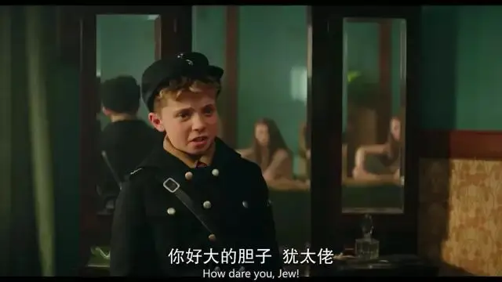
不知不觉中，孩子们的人性和独立精神被革了命，在爱国主义和民族主义的感召下成为了一群恶魔。
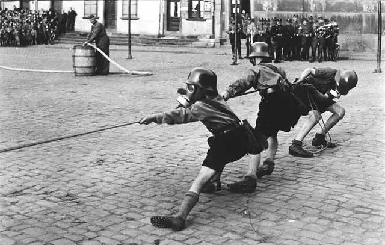
所以，要击垮纳粹，就必须要让人性复苏，要用爱和勇敢努力发出不同的声音。
电影中，乔乔母亲就是这股力量的代表。
我们可以通过系鞋带这个戏剧点，来看清楚整条脉络。
全片共有五处系鞋带的戏份，而五处系鞋带除了是乔乔成长的节点，也象征着纳粹统治下一个家庭的变迁。
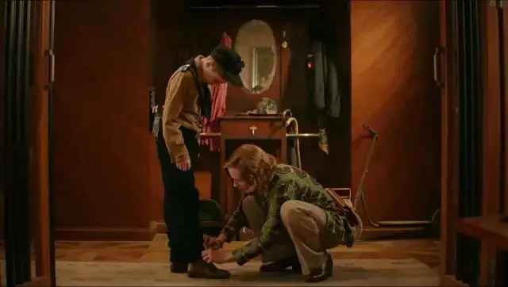
前三处系鞋带是妈妈为乔乔系鞋带，分别出现在17分30秒乔乔要出门时，30分20秒乔乔发现隔板里的犹太人之后，50分50秒乔乔和妈妈在公园里。
前面三处戏，代表母亲对他的爱和保护。
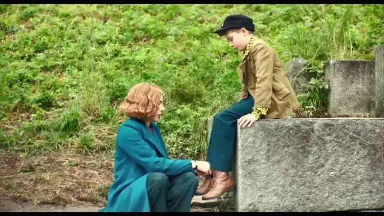
这种爱的力量是很强大的。
乔乔被炸弹炸伤，不仅伤了腿，而且还被毁了容貌。
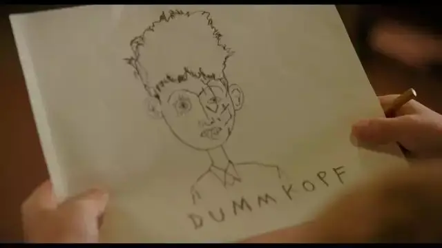
这样一个丑陋无用的人正是纳粹所讨厌的弱者，乔乔很明白这一点，所以他内心既自卑又恐惧。
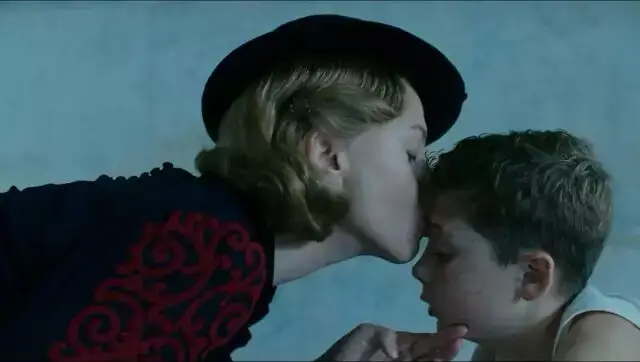
但是，妈妈接纳了他，爱了他，并没有因为他是弱者而抛弃他。
虽然乔乔口里依旧喊着纳粹的口号，但是他幼小的心灵很清楚，躺在妈妈的怀抱里更安全，更温暖，更像个人。
对弱者的怜悯而非强壮让人之所以为人！
第四处出现在78分22秒乔乔为死去的妈妈系鞋带，从这里，母亲作为一个乔乔可以依靠的对象正式消失。
母亲的消失也意味着乔乔所拥有家庭的正式解体。
乔乔切身地知道，死亡并不是纳粹那样说的美好，而是充满了眼泪和痛苦。
残酷的现实也是乔乔个人不得不成长的开始。
这个场景我认为是整个电影中最华彩的地方，镜头调度极其简单，但是效果特别出众。
首先，一个主观镜头，乔乔发现蝴蝶
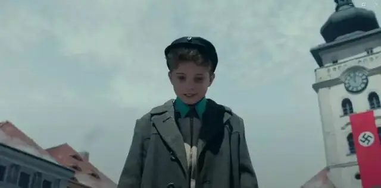
乔乔跟随蝴蝶来到广场
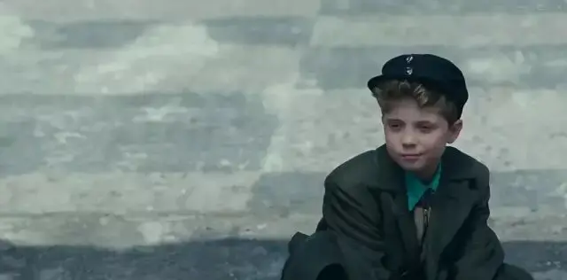
蝴蝶飞远，乔乔看着远去的蝴蝶准备站起来
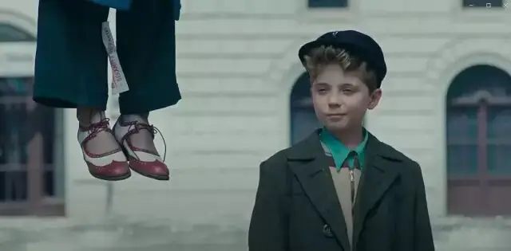
镜头跟随乔乔一起上移，看到了一双鞋。
前面游泳池戏份里已经给过了这是母亲的鞋子，但是观众需要反映时间，此时观众会和乔乔一样在调取大脑里的记忆，这是谁的鞋子呢。
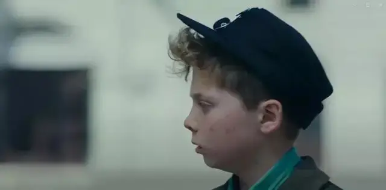
一个特写给乔乔的反应。
啊，这是妈妈的鞋子。
镜头给的特别准。
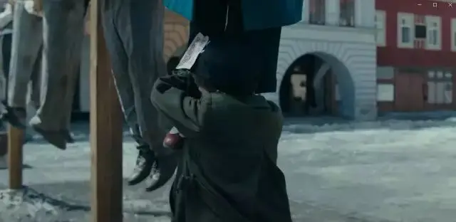
没有让乔乔像部分国产片里一样立马嚎啕大哭，而是马上给了个中景镜头反映乔乔的动作，一下抱紧了母亲的腿。
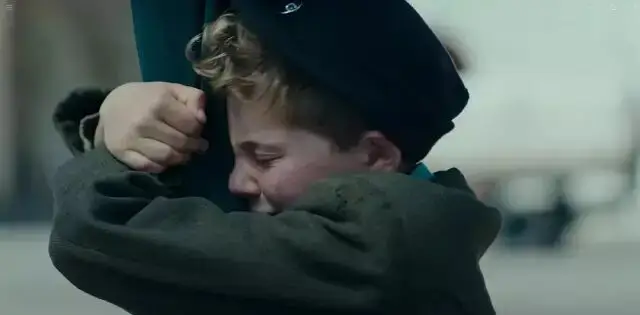
接着特写给表情，知道妈妈已经永远离开他了，开始哭泣。
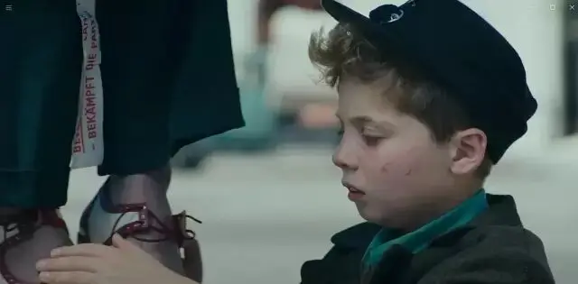
然后发现，妈妈的鞋带松了，给妈妈系鞋带，呼应前面系鞋带的戏份。
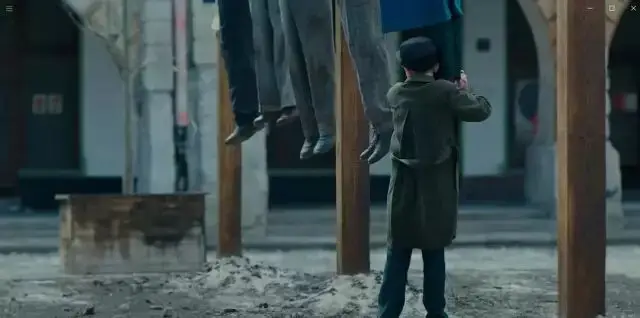
接着给全景，看看大家的鞋带有没有松，升华动作。
大全景，这个场地选的也特别的好，房屋的窗户像众人的眼睛一样盯着这一切，但是没人回应，象征着纳粹统治下的残酷与冷漠。
给眼睛的特写，加强情绪，突出孤独感，接着这段戏结束。
整段里，斯嘉丽约翰逊并没有出境，仅仅出现一双脚就达到了如此令人悲痛的场景，镜头语言使用的极其克制与精准，瞬间让观众与乔乔达到了共情。
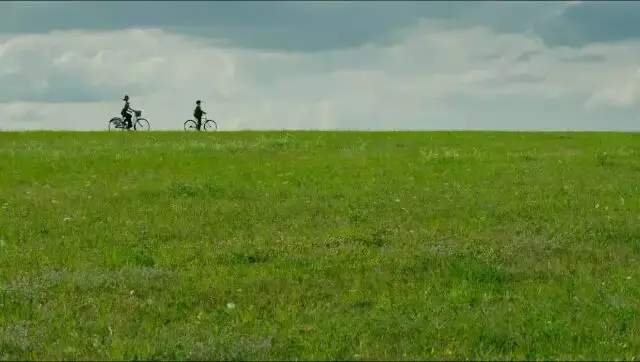
这部电影的剧作很出色，伴随着母亲的线索，还有两条线索伴随着乔乔的成长。
一条线索是希特勒的真面目逐渐显露，他像小丑一样丑态百出，让乔乔逐渐产生了质疑。
另一条就是乔乔和犹太女孩之间的关系。
这个犹太女孩不仅打破了乔乔对犹太人的偏见，更是让乔乔怦然心动，产生了对爱和自由的向往。
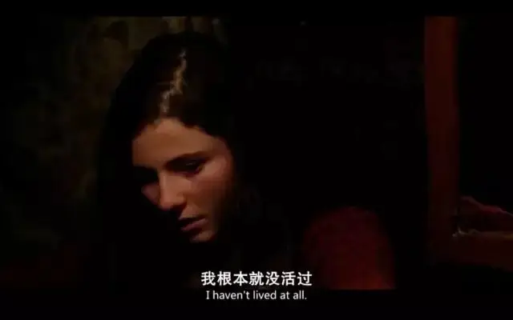
母亲的爱和牺牲、犹太女孩对自由的渴望、希特勒的残忍和愚蠢，这些让乔乔的人性彻底苏醒。
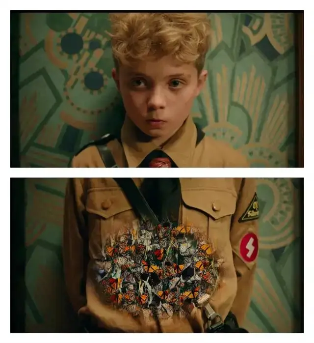
乔乔虽然只有十岁，但是他勇敢地接过了母亲的接力棒，用自己的方式守护了那个藏匿在家中的犹太女孩。
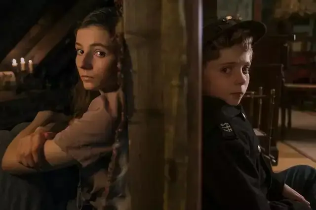
所以，最后一处系鞋带的动作出现在100分30秒。
乔乔带着犹太少女走出大门，并为犹太少女系鞋带。
至此乔乔完成电影中的成长，成为了一个可以保护别人的人，一个拥有正常人性和情感的人，也意味着战后家庭的重组。
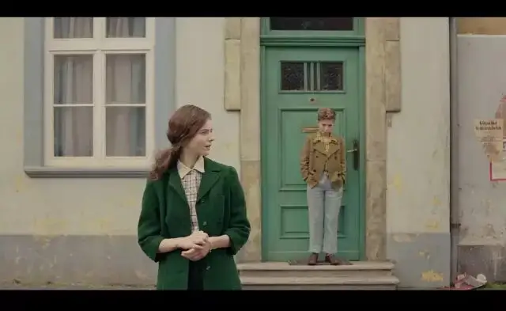
这部作品虽然通过喜剧的方式对现实现象进行了解构以及嘲讽，成功地达到了让人想到纳粹就想吐的效果。
但另一方面，这部电影所刻画的现象非常值得我们警惕和深思。
1、一个社会，看似光明的口号，喊的越响亮，现实中就越龌蹉，因为正常的社会里，不需要整天喊口号，除非是为了壮胆干坏事。
2、最恐怖的是政治没有人性，而没有人性的源头是无神论的世界观和教育。
昨天，弱者和某些种族没有生存的权力，今天，穷人和异见分子没有存在的必要，明天又会是谁.....
所以，没有了上帝，谈论人人平等，谈论人的尊严是一个笑话。
因为任何一类人的任何一种骄傲，都可以成为杀死另一类人的理由，毕竟他认为自己是神嘛！
3、杰克・斯奈德认为“纳粹成功的关键不是因为在开放讨论领域里的游说有多么出色，而是全赖于其口头功夫穿透了分隔的市场，以及讨好中产阶级和小城镇的目标人群的风格塑造。”
所以，怜悯和同情才是真正的力量。
当一个圈子嘲笑另一个圈子，一个阶层看不到另一个阶层的眼泪时，往往是悲剧的开始。
其次，就像伯格曼所说：
“我们从来没听过自由这个词，从来没尝过自由的滋味，在一个权威体系里，所有的门，都是关着的。
不管是一片青草，一个人，一个节目，一座村庄，或是一个时代，成熟生长，都不是与岁月俱来的――除非土壤中饱含养分，枝叶经过风吹雨打，沉实厚重，还有，门打开着，自由，如春风自由流动。”
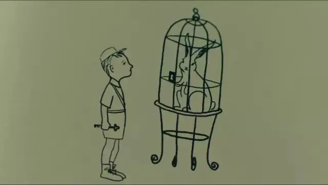
所以，我们要最大限度地追求信息的多元，以努力打破隔阂和封闭，品尝自由的滋味。
哪怕只是很有限地吸了一口自由的空气，那也是很有力量的。
因为有一颗希望的种子已经在你心中不知不觉地埋下，他会发动你的好奇心和良知去寻找爱、自由和真理。
-END-
推荐阅读
▼
（点击图片即可获取全文）


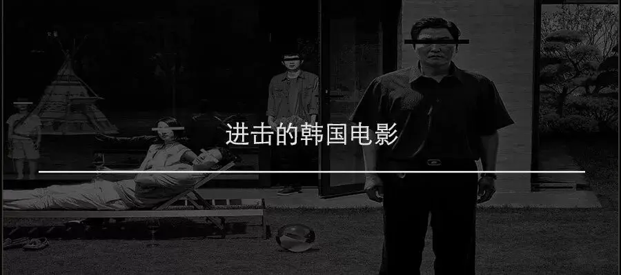
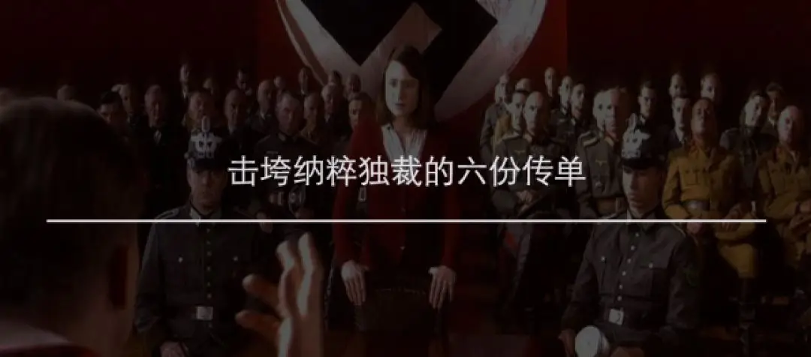
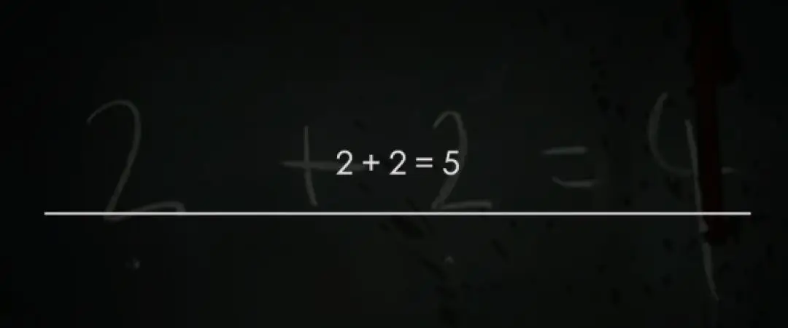
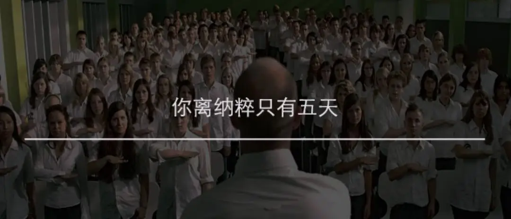
这里没有挑逗你眼目情欲的小鲜肉
也没有挑动你肉体情欲的段子
更没有膨胀你今生骄傲的鸡血
我们只在乎那些最质朴真诚的作品
在那里我们才能恢复真正的想象力
我们也坚信这才是我们真正需要的

ID:Six_hundred_hits
长按二维码，一键关注
【六百击】
电影评论
尽情分享朋友圈

微信二维码打赏通道
特别提醒：文中图片来自网络，版权归原作者所有，如有侵权请立即与我们联系,我们将及时删除。